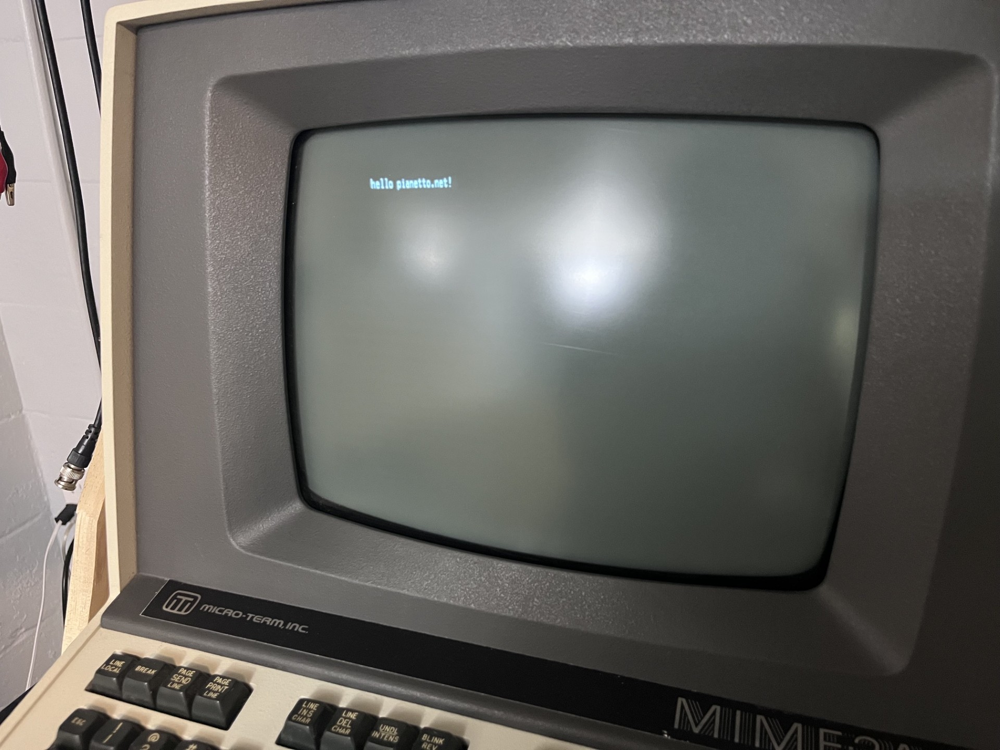
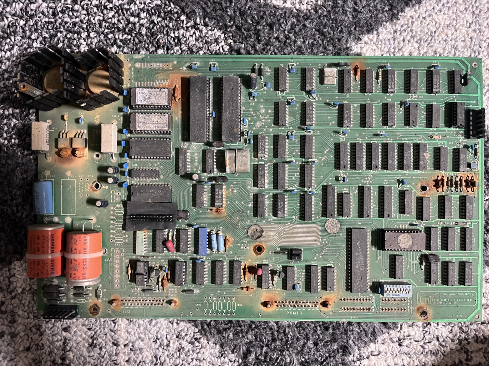
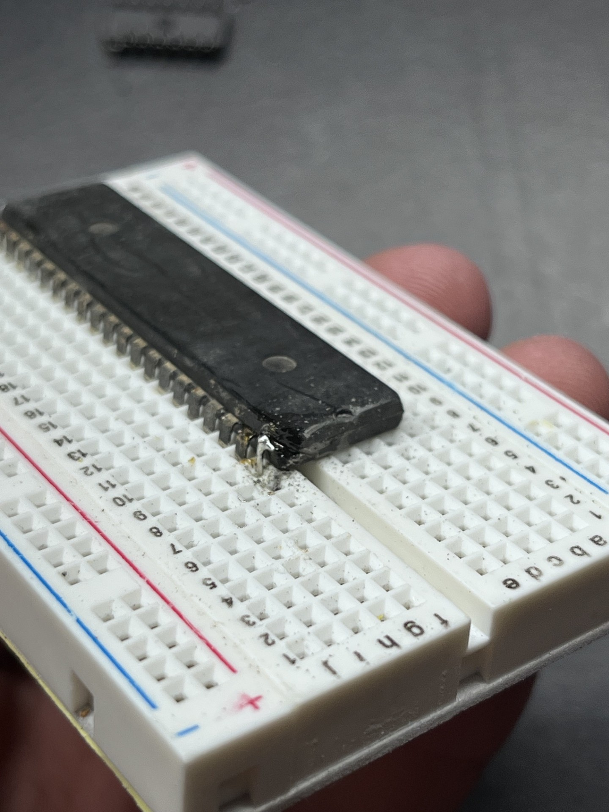
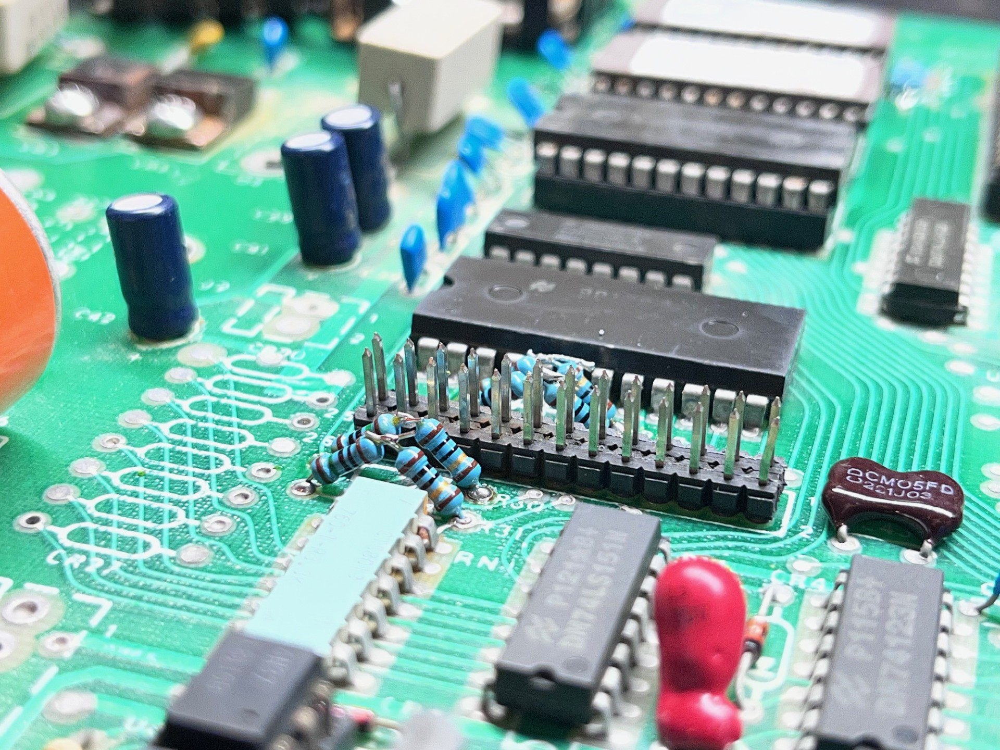
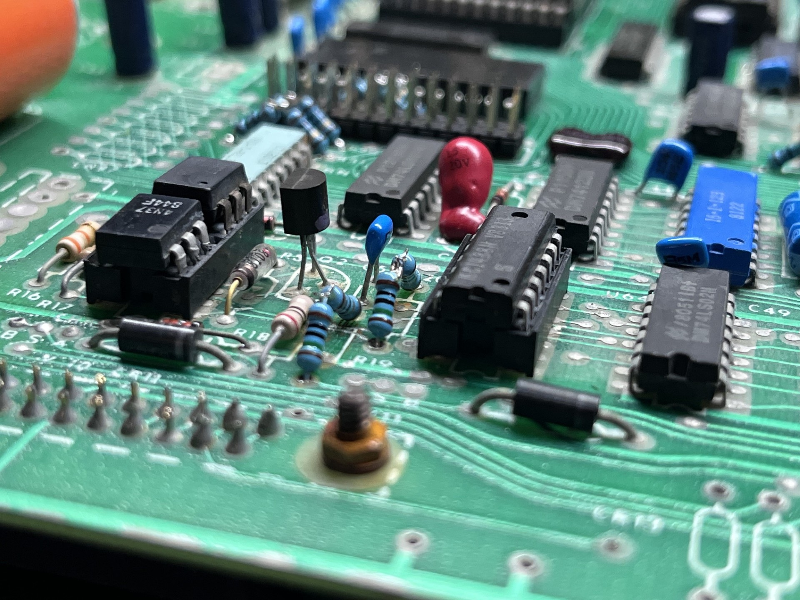
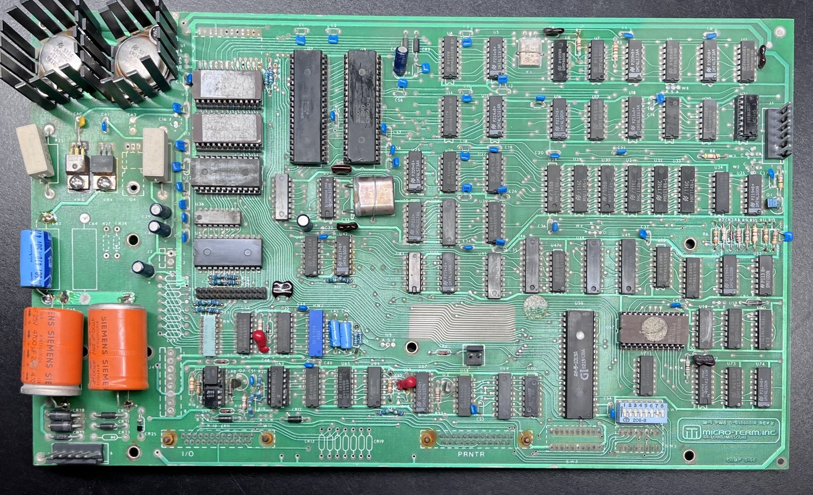
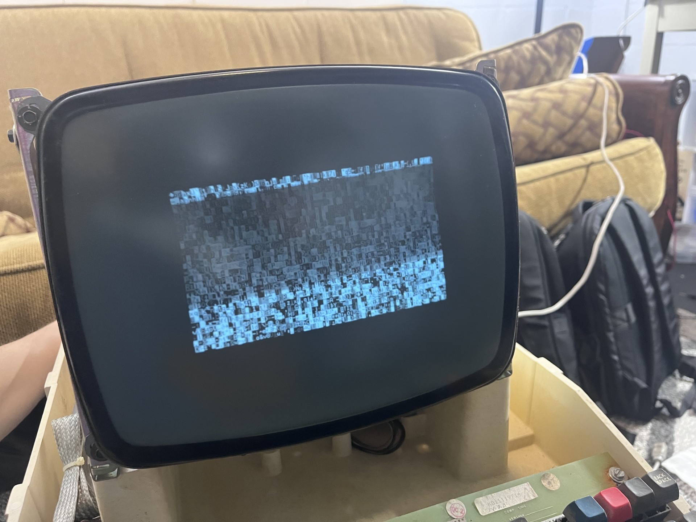
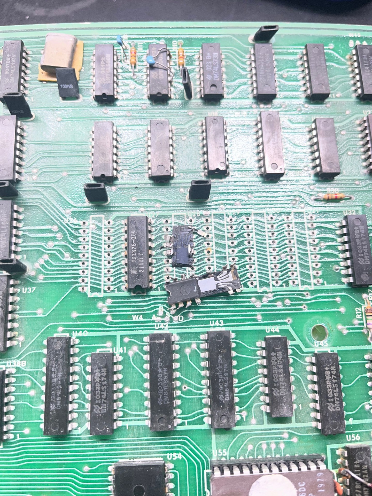

.... .. . s s s
+^""888h. ~"888h @88> :8 :8 :8
8X. ?8888X 8888f %8P u. u. .88 .88 u. u. u. .88
'888x 8888X 8888~ . u x@88k u@88c. .u :888ooo :888ooo ...ue888b x@88k u@88c. .u :888ooo
'88888 8888X "88x: .@88u us888u. ^"8888""8888" ud8888. -*8888888 -*8888888 888R Y888r ^"8888""8888" ud8888. -*8888888
`8888 8888X X88x. ''888E` .@88 "8888" 8888 888R :888'8888. 8888 8888 888R I888> 8888 888R :888'8888. 8888
`*` 8888X '88888X 888E 9888 9888 8888 888R d888 '88%" 8888 8888 888R I888> 8888 888R d888 '88%" 8888
~`...8888X "88888 888E 9888 9888 8888 888R 8888.+" 8888 8888 888R I888> 8888 888R 8888.+" 8888
x8888888X. `%8" 888E 9888 9888 8888 888R 8888L .8888Lu= .8888Lu= u8888cJ888 . 8888 888R 8888L .8888Lu=
'%"*8888888h. " 888& 9888 9888 "*88*" 8888" '8888c. .+ ^%888* ^%888* "*888*P" .@8c "*88*" 8888" '8888c. .+ ^%888*
~ 888888888!` R888" "888*""888" "" 'Y" "88888% 'Y" 'Y" 'Y" '%888" "" 'Y" "88888% 'Y"
X888^""" "" ^Y" ^Y' "YP' ^* "YP'
`88f
88
[06/14/2026]
In my last post, I powered on one of my mainboards that had some logic issues which I will touch on later in this post. Since then, I've pulled the mainboard out of another terminal (the one that was missing its analog board) and tried powering it on with an analog board hooked up. This mainboard turned out to simply work without any cleanup necessary, and is thankfully the same revision as my other poor condition board that has rusted resistors. Because I do not have a schematic, I will have to reference the working mainboard to get the resistor values. Here is a picture of the terminal powered on echoing:

Now that I have a working terminal, I am going to focus on getting the other terminals working using this one as a referenc. The mainboard I will be working on here was the worst out of the three. Here it is pictuered as I found it:

This mainboard was rusted through. Nuts, screws, even resistors. The legs of all the ICs were corroded as well, I actually ended up breaking off a leg of the MK3850 (an early 8bit CPU). I was able to get this "fixed" by removing the plastic packaging and soldering on a resistor lead to the bare exposed metal:

I removed the voltage regulators, cleaned them up like I did in the last part and submerged the mainboard in 50/50 mixture of vinegar and water overnight. After this I scrubbed as much rust as I could. I then removed all the rusted resistors and replaced them with what I had in my resistor kits. Unfortunately I did not have some values (namely 75ohm and 160 ohm) so the weird resistor combinations you see on the board is a result of me getting creative and trying to match the values from my other board.


Since I have three of these terminals, I wanted to "restomod" one of them, that is, modify one of them in a way that enhances the usability. After I got this mainboard repaired with those funky resistor combinations I realized this mainboard would never be stock, so I devided to use it for my modified Mime 2A terminal plans. I plan on adding a modern cherry mx keyboard since the keyboard that came installed in these originally kind of suck. Anyways I'm on a bit of a rant now here is the mainboard all cleaned up and ready for powerup:

If you recall from last post, the terminal powered up and displayed garbled text. Keep in mind since I do not have a user manual, I am making many assumptions about how these terminals operate. With the working terminal, we can see it boots up with a sort of RAM check. It cycles through the character ROM and is liekly writing to the RAM, checking that it passes R/W before placing the user at the prompt. This is the screen that appears on boot with the working terminal:

Look familiar? This looks almost like the screen we were getting on the other terminal, suggesting that this RAM check is not passing. I decided to desolder the 2114 memory to replace them with sockets. One of the RAM chips actually broke in half... hmm maybe these ram chips are more gone than I had thought. By sheer dumb luck, it turns out I have quite a lot of spares for these 2114 memory ICs, so at least I don't have to spend stupid prices on obsolete parts. Here is the ram chip that broke in half:

To be continued...